Publications
2020
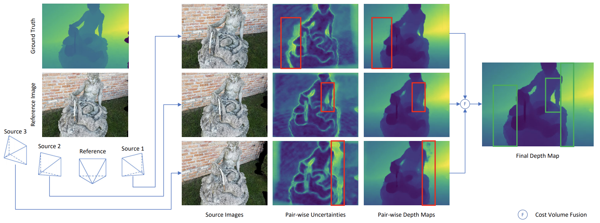
Jingyang Zhang, Yao Yao†, Shiwei Li, Zixin Luo, Tian Fang
British Machine Vision Conference (BMVC) 2020 (Oral)
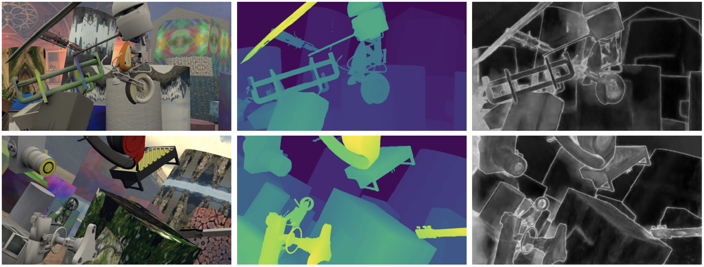
Jingyang Zhang, Yao Yao†, Zixin Luo, Shiwei Li, Tianwei Shen, Tian Fang, Long Quan
International Conference on Pattern Recognition (ICPR) 2020 (Best Student Paper Award)
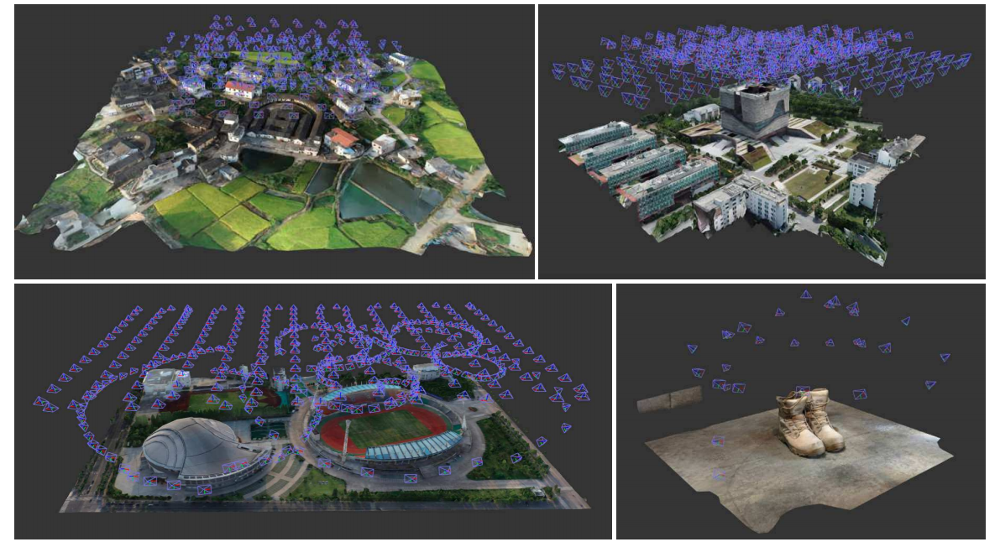
Yao Yao, Zixin Luo, Shiwei Li, Jingyang Zhang, Yufan Ren, Lei Zhou, Tian Fang, Long Quan
Computer Vision and Pattern Recognition (CVPR) 2020
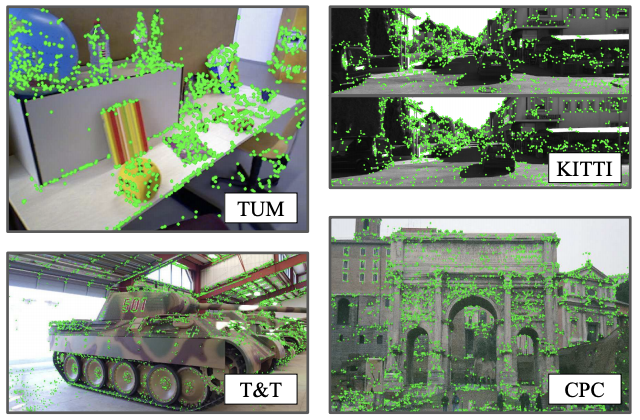
Zixin Luo, Lei Zhou, Xuyang Bai, Hongkai Chen, Jiahui Zhang, Yao Yao, Shiwei Li, Tian Fang, Long Quan
Computer Vision and Pattern Recognition (CVPR) 2020
Lei Zhou, Zixin Luo, Tianwei Shen, Jiahui Zhang, Mingmin Zhen, Yao Yao, Tian Fang, Long Quan
Computer Vision and Pattern Recognition (CVPR) 2020 (Oral)
2019
Tianwei Shen, Lei Zhou, Zixin Luo, Yao Yao, Shiwei Li, Jiahui Zhang, Tian Fang, Long Quan
International Conference on Computer Vision Workshops (ICCVW) 2019
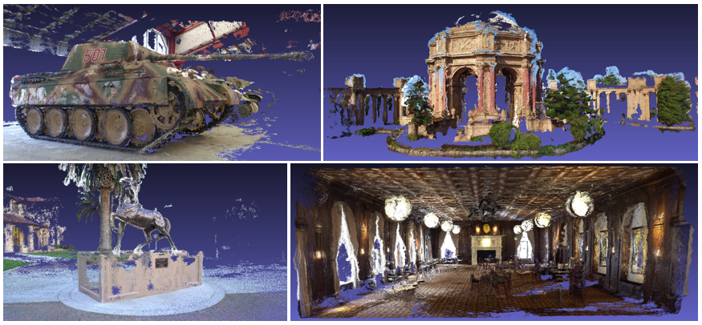
Yao Yao, Zixin Luo, Shiwei Li, Tianwei Shen, Tian Fang, Long Quan
Computer Vision and Pattern Recognition (CVPR) 2019
Cross-atlas Convolution for Parameterization Invariant Learning on Textured Mesh Surface [paper]
Shiwei Li, Zixin Luo, Mingmin Zhen, Yao Yao, Tianwei Shen, Tian Fang, Long Quan
Computer Vision and Pattern Recognition (CVPR) 2019
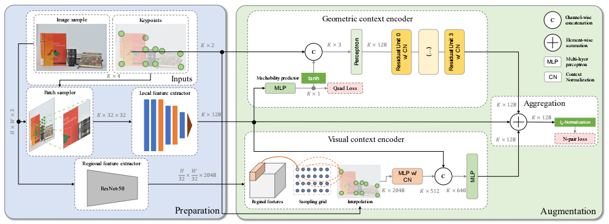
Zixin Luo, Tianwei Shen, Lei Zhou, Jiahui Zhang, Yao Yao, Shiwei Li, Tian Fang, Long Quan
Computer Vision and Pattern Recognition (CVPR) 2019 (Oral)
2018
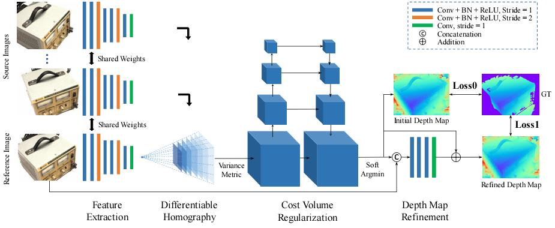
Yao Yao, Zixin Luo, Shiwei Li, Tian Fang, Long Quan
European Conference on Computer Vision (ECCV) 2018 (Oral)
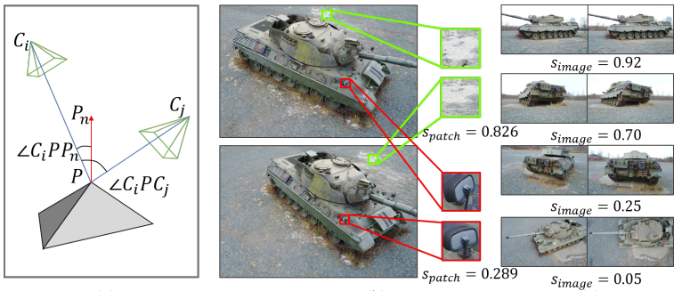
Zixin Luo, Tianwei Shen, Lei Zhou, Siyu Zhu, Runze Zhang, Yao Yao, Tian Fang, Long Quan
European Conference on Computer Vision (ECCV) 2018
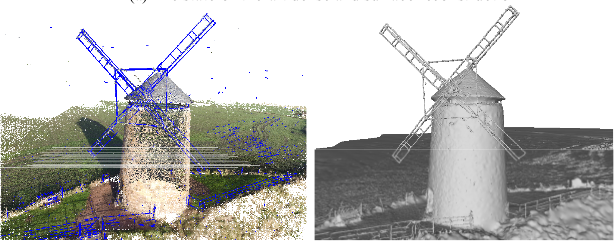
Shiwei Li, Yao Yao, Tian Fang, Long Quan
Computer Vision and Pattern Recognition (CVPR) 2018
2017
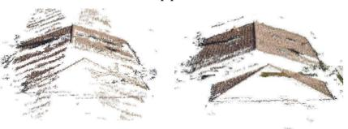
Reletive Camera Refinement for Accurate Dense Reconstruction [paper]
Yao Yao, Shiwei Li, Siyu Zhu, Hanyu Deng, Tian Fang, Long Quan
International Conference on 3D Vision (3DV) 2017 (Spotlight Oral)
2014
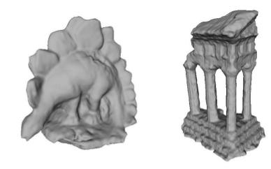
Revised depth map estimation for multi-view stereo [paper]
Yao Yao Hao Zhu, Yongming Nie, Xiaoli Ji, Xun Cao
International Conference on 3D Imaging (IC3D) 2014 (Oral)